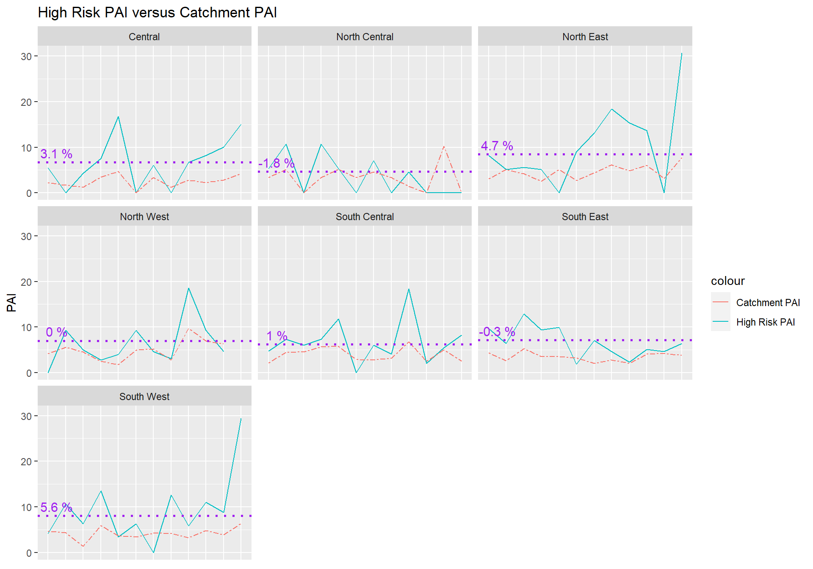

weekly_PAI## Division HR_PAI Catchment_PAI week
## 1 Central 6.747171 2.565369 08/01-11/04
## 2 North Central 4.655967 3.542741 08/01-11/04
## 3 North East 8.434950 4.068791 08/01-11/04
## 4 North West 7.016221 5.016249 08/01-11/04
## 5 South Central 6.205148 3.889077 08/01-11/04
## 6 South East 7.178133 3.629927 08/01-11/04
## 7 South West 8.066176 4.168612 08/01-11/04
## 8 Central 6.546082 2.526139 08/01-10/27
## 9 North Central 4.742188 3.608347 08/01-10/27
## 10 North East 8.058041 4.006397 08/01-10/27
## 11 North West 7.016221 5.016249 08/01-10/27
## 12 South Central 6.141654 3.931048 08/01-10/27
## 13 South East 7.197898 3.623667 08/01-10/27
## 14 South West 7.639821 4.123136 08/01-10/27
## 15 Central 5.488130 2.287304 08/01-08/08
## 16 North Central 5.334962 3.418434 08/01-08/08
## 17 North East 8.179345 3.100031 08/01-08/08
## 18 North West 0.000000 4.200599 08/01-08/08
## 19 South Central 4.715913 2.173308 08/01-08/08
## 20 South East 9.677662 4.342492 08/01-08/08
## 21 South West 4.197704 4.601714 08/01-08/08
## 22 Central 0.000000 1.677357 08/09-08/16
## 23 North Central 10.669924 5.127652 08/09-08/16
## 24 North East 5.112091 5.166719 08/09-08/16
## 25 North West 9.265010 5.600799 08/09-08/16
## 26 South Central 7.335864 4.507601 08/09-08/16
## 27 South East 6.451775 2.573329 08/09-08/16
## 28 South West 10.685065 4.392545 08/09-08/16
## 29 Central 4.312102 1.198112 08/17-08/24
## 30 North Central 0.000000 0.000000 08/17-08/24
## 31 North East 5.576826 4.227316 08/17-08/24
## 32 North West 5.053642 4.582472 08/17-08/24
## 33 South Central 6.002071 4.610047 08/17-08/24
## 34 South East 12.903549 5.263627 08/17-08/24
## 35 South West 6.296556 1.380514 08/17-08/24
## 36 Central 7.546178 3.494493 08/25-09/01
## 37 North Central 10.669924 3.418434 08/25-09/01
## 38 North East 5.112091 2.583360 08/25-09/01
## 39 North West 2.779503 2.520359 08/25-09/01
## 40 South Central 7.335864 5.634502 08/25-09/01
## 41 South East 9.384400 3.509085 08/25-09/01
## 42 South West 13.561813 5.946831 08/25-09/01
## 43 Central 16.769285 4.659324 09/02-09/09
## 44 North Central 5.334962 5.127652 09/02-09/09
## 45 North East 0.000000 5.166719 09/02-09/09
## 46 North West 3.970719 1.800257 09/02-09/09
## 47 South Central 11.789782 5.795487 09/02-09/09
## 48 South East 9.925807 3.563071 09/02-09/09
## 49 South West 3.390453 3.716769 09/02-09/09
## 50 Central 0.000000 0.000000 09/10-09/17
## 51 North Central 0.000000 3.418434 09/10-09/17
## 52 North East 9.021336 2.735322 09/10-09/17
## 53 North West 9.265010 4.900699 09/10-09/17
## 54 South Central 0.000000 2.897744 09/10-09/17
## 55 South East 1.843364 3.308565 09/10-09/17
## 56 South West 6.296556 3.451286 09/10-09/17
## 57 Central 6.036943 3.354713 09/18-09/25
## 58 North Central 7.113283 4.557912 09/18-09/25
## 59 North East 13.145376 4.428616 09/18-09/25
## 60 North West 4.632505 5.250749 09/18-09/25
## 61 South Central 6.002071 2.766028 09/18-09/25
## 62 South East 7.038300 2.105451 09/18-09/25
## 63 South West 0.000000 4.294933 09/18-09/25
## 64 Central 0.000000 1.198112 09/26-10/03
## 65 North Central 0.000000 3.418434 09/26-10/03
## 66 North East 18.403526 6.200063 09/26-10/03
## 67 North West 3.088337 2.800399 09/26-10/03
## 68 South Central 4.126424 3.169407 09/26-10/03
## 69 South East 4.692200 2.807268 09/26-10/03
## 70 South West 12.593112 4.141543 09/26-10/03
## 71 Central 6.707714 2.795594 10/04-10/11
## 72 North Central 4.572825 1.465043 10/04-10/11
## 73 North East 15.336272 4.843799 10/04-10/11
## 74 North West 18.530021 9.801397 10/04-10/11
## 75 South Central 18.339661 6.761402 10/04-10/11
## 76 South East 2.346100 2.105451 10/04-10/11
## 77 South West 5.876786 3.221200 10/04-10/11
## 78 Central 8.232195 2.287304 10/12-10/19
## 79 North Central 0.000000 0.000000 10/12-10/19
## 80 North East 13.632242 6.027839 10/12-10/19
## 81 North West 9.265010 7.000998 10/12-10/19
## 82 South Central 2.063212 2.535526 10/12-10/19
## 83 South East 5.161420 4.117326 10/12-10/19
## 84 South West 11.018973 4.831800 10/12-10/19
## 85 Central 10.061571 2.795594 10/20-10/27
## 86 North Central 0.000000 10.255303 10/20-10/27
## 87 North East 0.000000 3.229199 10/20-10/27
## 88 North West 4.632505 6.300898 10/20-10/27
## 89 South Central 5.501898 5.071052 10/20-10/27
## 90 South East 4.692200 4.210902 10/20-10/27
## 91 South West 8.815179 3.865440 10/20-10/27
## 92 Central 15.092357 4.193391 10/28-11/04
## 93 North Central 0.000000 0.000000 10/28-11/04
## 94 North East 30.672544 7.750079 10/28-11/04
## 95 North West NA NA 10/28-11/04
## 96 South Central 8.252847 2.535526 10/28-11/04
## 97 South East 6.451775 3.859993 10/28-11/04
## 98 South West 29.383929 6.442400 10/28-11/04The weekly PAI data is available at https://github.com/farbodcpal/PAI_analysis/tree/main/data
Below, the PAI of each division is visualized over time since 08/01/2022
